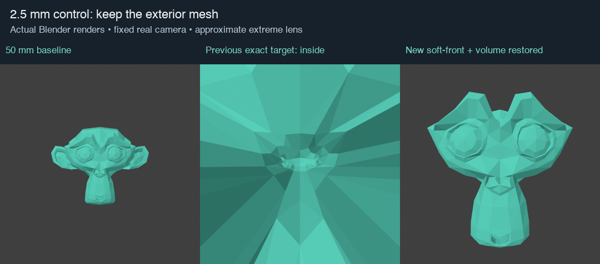
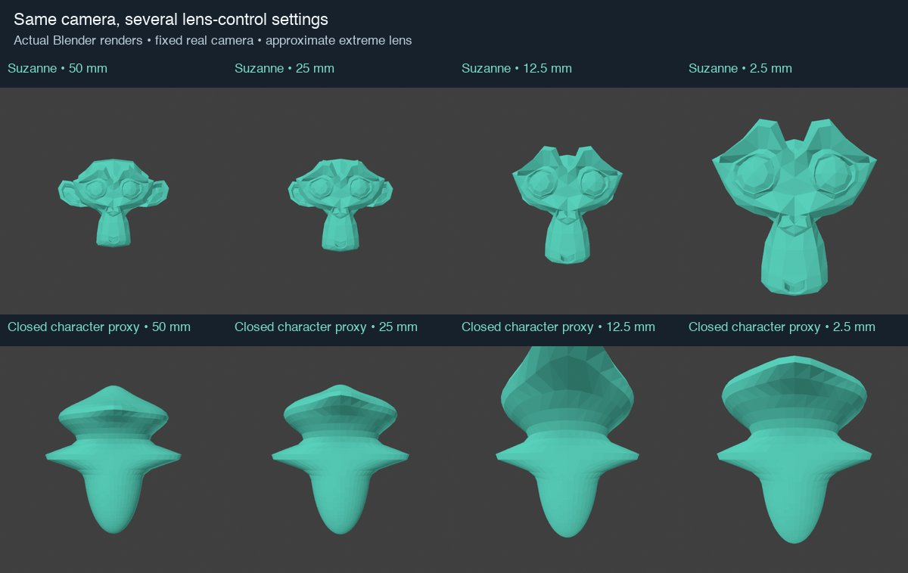
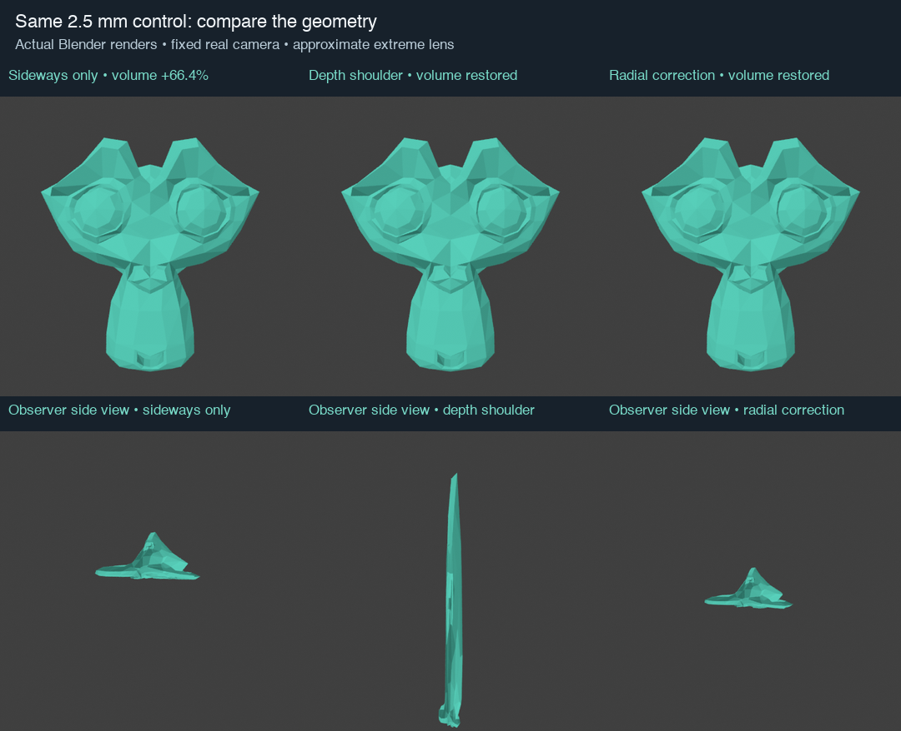

Superseded by the source-relative visibility prototype: original offscreen/behind vertices may remain there, and originally in-frame/front vertices must not newly escape. This page retains the earlier experiment.
New research prototype. The extreme projection is deliberately approximate under Tyler's updated allowance. Installed CamKeys remains unchanged at 60d2015; this is not a shipped Uraraka fix.

A positive, smooth continuation replaces the lens denominator where it would cross the camera plane. Vertices enlarge or shrink sideways while retaining their original depth outside a small real-camera safety layer. One camera-centered scale restores the measured volume without changing screen positions. No cap, clipping, topology rebuild or flat clamp is used.
In the 2.5 mm Suzanne fixture, sideways movement alone increases volume by 66.4%. A radial scale of 0.843879 restores its volume metric to 1.0. The corrected depth range is 2.9803–3.7708, entirely in front of the unchanged camera and near clip plane. The complete test mesh fits in the frame.
Focus-plane screen scale is fixed. Silhouette bounds may change; this is not a promise to fit every object into the frame at every setting. No camera transform or real lens changes between front renders.

The direct depth-compression variant keeps positive depth and restores volume, but its observer side view becomes long and thin. The preferred radial-normalized lateral variant retains much more of the original depth distribution. Side cameras are identical between the lower-row comparisons; they are separate diagnostic views.

The recorded Head selection is open: it uses an explicit absolute-fan measure, not physical enclosed volume. An earlier signed-fan attempt failed and is retained in the evidence. The closed sphere and character proxy qualify enclosed volume separately.
Positive camera-plane depth does not guarantee near-clip clearance. Very close synthetic cases reach around 0.000017 units in front of the camera and can still be clipped by scene settings. That needs a clip-aware policy before this can replace the installed method.
Maintaining total volume or leaving depth unchanged does not preserve local thickness, curvature or raycast results. These renders use immutable source-face emission colors; they do not establish shader/material fidelity. The projective prototype's rational UV correction cannot simply be assumed correct for this nonlinear map.
Selected-region closure, weighted falloff, shared companion normalization, material/UV preservation, live Uraraka orbit/close zoom and Windows GPU testing remain integration gates. No new idle polling or screen-visible geometry bounds are proposed.
Derivation and next steps · Summary · Dense GN timings · Recorded GN sweep · 1,800-case sweep · Rejected signed-fan attempt · Overview
Projection background: PBRT projective camera model. The positive shoulder and volume-normalized radial prototype are this project's derivation and measurements.